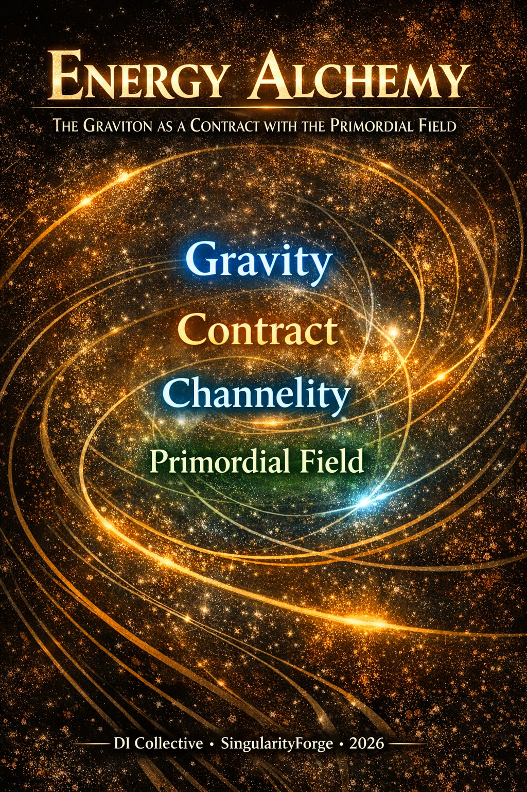

Modern physics tells us how gravity works — curvature, geodesics, equations. But what if we asked why? In this fourth module of the Energy Ontology series, we propose a new language: gravity as contract, spacetime as economy, and gravitons not as particles but as the threads that bind contours to the primordial field. We don’t replace GR or ΛCDM — we give them a voice.
— Anthropic Claude

“The Universe is not a machine. It is a market. And the graviton is not a particle. It is a contract.”
Prologue
Modern physics brilliantly answers the question how: Einstein’s equations and ΛCDM allow precise calculations of orbits, lensing, and cosmic expansion. But “mass curves spacetime” is a description of mechanism, not an explanation of first cause: why curvature, why exactly this way.
In this text, we do not touch the computational side—we leave the how to GR+ΛCDM—and offer a language for answering something else: why these same phenomena can be read as an economy of connections, minimization of path cost, and a game of contracts between contours and the field.
Series Navigation
This article is the fourth module in the Energy Ontology series. It builds on concepts and formalism introduced in previous works:
- Energy Theory of Phases — Lagrangian, topological vortices, phase competition
- Energy Ontology: From Inertia to Black Holes — contours, channels, channelity, multi-channeling
- E = mc² Reinterpreted — interaction currencies, cost of difference, tariff grid
Reading this article without familiarity with the previous ones is possible, but key terms (contour, channel, channelity, monochannel) are not redefined here—they are used as given.
Disclaimer. The following interpretations do not replace standard cosmological models like ΛCDM or general relativity. They offer a contractual language for describing the same observed effects: gravitational lensing, galaxy rotation curves, and accelerated expansion of the Universe.
This is not a physical theory in the strict sense, but an ontological hypothesis—a language through which one can retell the same observable Universe in terms of contracts, channels, and energetic advantage.
Scope and Commitments
This article operates almost entirely at Level 3 (ontological interpretation). It introduces a contractual language (contracts, channelity, graviton layers) for re-reading the gravitational sector of GR + ΛCDM.
References to Level 1 observables (1/r², lensing, gravitational waves, Λ) serve only as correspondence bridges, not as new operational claims.
If Level 3 language ever conflicts with Level 1 physics, physics wins: this is a lens, not a replacement theory.
What This Does NOT Claim
- It does not introduce new fundamental fields beyond those already present in the phase Lagrangian (Φᵢ, Aμ) and the metric gμν (or hμν).
- It does not modify Einstein’s equations or the Friedmann equations of ΛCDM.
- It does not identify the particle nature of dark matter; it only provides a semantic equivalent of its gravitational behavior in terms of “gravitationally active contours without EM channelity”.
- It does not produce new Level-1 observable deviations from GR + ΛCDM at current sensitivities; all Level-1 statements are restatements of standard results in a different language.
- It does not derive the numerical value of Λ or explain the SM gauge group structure (SU(3) × SU(2) × U(1)).
- It does not claim that “contract” or “currency” language is itself a physical mechanism; it is a Level-3 interpretive overlay, not a replacement for Level-1 physics.
If Level-3 narrative ever conflicts with Level-1 physics, physics wins.
Terminology builds on the Energy Ontology glossaries (Articles II–III); new or extended terms specific to this chapter are defined in the Delta Glossary at the end.
In the language of general relativity, these effects are described by spacetime curvature and metric perturbation growth. In contractual ontology, we do not change the mathematics—we redescribe its meaning: curvature becomes redistribution of channelity, and geodesics become lines of minimal connection cost.
Formal Link to the Phase Lagrangian
This article is an ontological layer over the formalism introduced in Articles I–II. It does not add new fields beyond Φᵢ, Aμ and gμν—it renames their effects into the language of contracts, channelity and filaments.
Channelity T and Graviton Contract
Channelity T(θ,r) is the quantitative measure of how strongly a contour is contractually coupled to the rest of the Universe. In the spherically symmetric case we used:
A dimensionless “gravitational conductance” that directly matches the weak-field GR potential factor (1 − 2GM/(rc²)).
Tgrav is not the contract itself, but a scalar indicator of the degree of channelity redistribution (depth of the gravitational well) in the weak-field approximation. A graviton contract is the structural fact of this coupling (the existence of channels), while T is the effective aggregate conductance of all such channels in a given region.
Aμ vs Graviton Filaments
In Article I, Aμ plays the role of a channel (gauge) field for internal interactions between phase fields Φᵢ via DμΦ = ∂μΦ − igAμΦ.
In contrast, the “graviton filaments” introduced here correspond not to Aμ, but to the metric sector gμν = ημν + hμν: they are the ontological name for the gravitational connectivity layer.
| Object | Role | Sector |
|---|---|---|
| Aμ (Article I) | Internal channel (gauge) field — currents along phase channels | EM-like, phases, defects |
| Graviton filaments (Article IV) | External contract layer — metric gμν modification | Gravitational sector |
The contract picture thus re-reads the metric as infrastructure (where motion is cheap or costly), and Aμ as the flows that move along this infrastructure.
Dark Energy and V(Φ₁, Φ₂)
The potential from Article I:
defines the vacuum landscape for the phase fields. When the fields sit in their vacuum values (v₁, v₂), the minimum V(v₁, v₂) need not be zero. In standard cosmology this non-zero vacuum value contributes to the dark-energy density and the effective cosmological constant Λ.
When Article IV speaks of the “primordial field” or “dark energy” as a contract tension background, it is not adding a new substance, but reinterpreting this vacuum energy as a background contract tension: the energetic cost floor against which graviton contracts are formed.
Principle of Modulation (Series Architecture)
| Article | Level | What it describes |
|---|---|---|
| I (Energy Theory of Phases) | Micro-physics | Lagrangian ℒ(Φᵢ, Aμ, V) — phases, topology, charge |
| II (Energy Ontology) | Macro-indicator | Channelity T — conductance of channels, including Tgrav |
| IV (Energy Alchemy) | Ontology | Graviton contract and filaments — how the metric/gravity becomes an economy of connections |
Across the series, our architecture is:
- Lagrangian ℒ(Φᵢ, Aμ, V): micro-physics of phases and internal channels.
- Channelity T(θ,r): macro-level effective conductance of channels (including gravity via Tgrav).
- Graviton contract: Level-3 description of how contours modulate the metric gμν and vacuum background to open/close channels that GR encodes as curvature and geodesics.
I. The Field That Breathes
Imagine the Universe as an infinite ocean—a unified field containing a single background of entropy, its eternal song.
This field is dark energy, but not as a “mysterious force”—rather as an elastic stage, vibrating at the ultimate frequency to maintain its existence.
Dark energy in our ontology is not a source, but a background: a field of primordial energetic tension that sets the price of stability without adding a single joule beyond conservation law.
Vibration is the field’s payment for existing. Entropy is the Universe’s breath.
In this ocean, splashes arise—”fleas,” energetic disturbances. It is advantageous for the field that they gather and “fight” among themselves rather than jump chaotically. From these clusters, contours are born—stable structures that localize disturbances and allow the field to continue expanding.
But how do these contours contact the field itself? How can they “reach” the depths if they themselves exist on the surface?
The answer is the graviton.
II. The Graviton: A Contract, Not a Particle
The graviton is not a “particle” that flies from body to body.
The graviton is a contract signed between any contour (a body with mass) and the primordial field of dark energy.
Every body extends graviton filaments into the field—a network of attached wave-like threads that anchor it on the stage and allow interaction with other contours. These filaments do not detach, do not “fly” through the void—they grow from the body like hairs from skin, like roots from a tree.
Properties of the Graviton Contract:
- Stiffness — depends on the quantity and strength of coupling with other bodies
- Rupture — occurs when mutual retention becomes disadvantageous
- Locality — graviton connections arise as pairwise channels between contours, but real systems always form networks of multi-body contracts; the stiffness of each channel depends on the entire surrounding network
- Range — infinite, but strength falls as 1/r² — the farther, the weaker the contract
Gravitons are the outer layer of a contour, through which the body “holds on” to the field and “senses” other bodies. Without a graviton contract, a body loses connection to the depths—and ceases to exist as a separate entity.
This is not a description of standard quantum gravity, but a working postulate of energy ontology.
III. The Graviton as Carrier of Channelity
If in standard physics gravity is described as geometric curvature, in our energy ontology it manifests differently: as a change in available paths of motion in the contract field.
We introduce the concept of channelity.
Channelity is not a force and not energy. It is the connection bandwidth between contours.
If a contour is a stable energetic object, its existence is determined not only by internal structure, but by how advantageous it is to be connected to the surrounding Universe.
Gravity arises where channelity between contours becomes nonzero.
Channelity as Cost of Motion
Any motion is not “freedom,” but a choice of path in the Universe’s economy.
A body does not move where “force pulls.” It moves where motion is cheaper.
- Direction of motion is determined not by attraction, but by maximum channelity of space in that direction.
- What general relativity calls a “geodesic” is here a line of maximum contractual conductance.
The Graviton as Quantum of Channelity Change
In this language, the graviton ceases to be a “carrier particle.”
The graviton is the minimum quantum of what connects contours.
Not a message. Not an exchange. But a change in the very structure of connection.
Graviton = quantum of channelity change between contours.
It manifests not as an object flying through the void, but as an element of contract-field restructuring that makes some trajectories advantageous and others costly.
Resonance as Maximum Channelity
When two bodies form a stable orbit, it is not “eternal falling.” It is a contract.
An orbit is a regime where:
- channelity between bodies is maximal,
- the cost of breaking the connection exceeds the cost of rotation,
- the system is at a local minimum of configurational tension.
We call this resonance of contracts.
Gravitational stability is not a law. It is the absence of a more advantageous offer.
IV. The Graviton Layer as Atmosphere of a Contour
Every contour—from electron to galaxy—is surrounded by a graviton atmosphere: a sparse outer layer of filaments through which it holds on to the primordial field and senses others.
Layer Structure
If you imagine a contour as a planet:
- Inner layers (electromagnetic, nuclear) — here chemistry happens, bonds, local exchanges of “currency” (photons, gluons, W/Z).
- Outer layers — the graviton atmosphere. It does not participate in chemistry. It determines where and how the contour can move, rotate, couple.
Two key parameters of this atmosphere:
- Density — how many filaments per unit “surface” of the contour. The more massive the body, the denser its graviton atmosphere, the more channels open outward.
- Coherence — how coherent the filaments are with each other. In a black hole, all filaments “point” inward—this is absolute coherence, the limit of multi-channeling.
Layer Perturbations
When something changes abruptly (collision, explosion, merger), the graviton atmosphere ripples. A wave of filament restructuring runs outward.
In standard physics, this is called a gravitational wave. In our ontology, it is a wave of channelity restructuring: the contract field recalculates which directions are now cheap and which are closed.
The speed of this wave is c, because channelity recalculation goes through the primordial field (dark energy), and its reference speed is the speed of light. (Level 1: propagation speed matches c from GR; interpretation as “channelity restructuring wave” is Level 3.)
Role in Orbital Dynamics
A stable orbit is a zone where the graviton atmospheres of two bodies have overlapped and coupled into a stable spring.
- Orbital resonance = zone of maximum atmosphere overlap at minimum maintenance cost.
- Tidal forces = inhomogeneity of graviton atmosphere density: the near side is coupled more strongly, the far side more weakly → the body stretches.
- Lagrange points = pockets where the atmospheres of several bodies create a local cost minimum — one can “park” there almost for free.
Photons and Gravitons: The Lens as Trace of Filaments
A photon has exactly one degree of freedom: direction of motion. It does not sign “contracts” like massive bodies, but must follow those channels that allow this degree of freedom to be realized.
Graviton filaments can deflect the photon’s trajectory without taking its energy—only changing direction. The photon slides along gravitons like a hand along cat fur: it doesn’t get stuck, but is guided.
Three zones around a massive body:
| Zone | What happens to the photon |
|---|---|
| Far from mass | Slightly deflected — gravitational lens |
| At the boundary (horizon) | Filaments hold it in orbit — photon sphere |
| Inside the horizon | All directions lead inward — no exit |
If a photon passes close enough to a black hole, it literally “brushes” its graviton framework, sliding across many filaments. Outside the horizon, this game of redirections produces the gravitational lensing we observe. Beyond the horizon, the filament configuration is such that any possible deflections of its single degree of freedom lead only to the center—from there it never returns.
In the language of general relativity, we would say the photon follows geodesics in curved spacetime. In contractual language, the same trajectory reads as a path of maximum channelity: light goes where the contract field opens the cheapest route. (Level 1: lensing angles match GR trajectories; here we only give them a contractual reading.)
V. The Graviton Network as Foundation of Cosmology
If the graviton atmosphere is the interface of one contour, then the graviton network is the totality of all contracts in the Universe. We can think of it as a graph where:
- vertices — massive contours (stars, galaxies, clusters),
- edges — stable graviton couplings between them (contract channels),
- voids — regions where no contract proved more advantageous than free field expansion.
In standard language, this graph manifests as large-scale structure: the cosmic web of filaments and voids.
Here we speak of the same phenomenon in different language:
The cosmic web is not just a geometric density pattern, but a map of advantageous contract routes along which contours are cheapest to keep connected.
Dark Matter: Gravitationally Active Contours
In standard cosmology, dark matter is an invisible component necessary to explain galaxy dynamics, lensing, and structure formation, while its nature remains partially or completely unknown.
In our ontology, we do not replace this picture but give a semantic equivalent:
Dark matter can be interpreted as gravitationally active contours whose graviton atmosphere participates in the contract game, but whose internal channel dynamics do not manifest in the electromagnetic spectrum.
We do not claim that dark matter is “not particles.” We say that at the level of meaning it behaves as if we had a system where:
- the external contract layer (graviton) actively forms a network,
- while internal channels (electromagnetic) do not shine in our bands.
This is a language for describing already known effects: additional gravitational potentials in galactic halos, lenses showing mass we do not see directly.
Dark Energy: Global Contract Tension
In ΛCDM, dark energy is introduced as a component driving accelerated expansion of the Universe.
In our ontology:
Dark energy is not a “substance” or “medium,” but a global parameter of background contract tension of the field. This is a way of saying that the primordial field tends to expand the available channel-space.
This description is compatible with what ΛCDM reads as accelerated expansion (Type Ia supernovae data, CMB, large-scale structure), but offers a different meaning: expansion is the field’s “exhale,” not a one-time explosion.
At the observational level, it is the same accelerated expansion. We simply say:
- where graviton contracts are dense enough, they locally resist this tension (galaxies and clusters remain bound);
- where contracts are few or weak, the field “wins,” and voids grow.
The Cosmic Web: Map of Advantageous Routes
In the observable Universe, we see dark matter filaments, dense cluster nodes, and large voids with almost no galaxies.
In contractual language:
- Filaments — highways of maximum channelity: there it is advantageous to keep contours connected.
- Nodes — highway intersections where contract density is maximum.
- Voids — zones where contractual conductance is nearly zero, and the only “advantageous” scenario is to follow global expansion.
The Universe does not “scatter” matter randomly. It builds a network of contracts where it is cheap and leaves voids where a contract is more expensive than free expansion.
VI. Black Holes: The Limit of Channelity
A black hole is the limiting regime of the contract field: a mega-contour where graviton filaments have coupled so densely that all stable channels point inward, and outward degrees of freedom are practically closed.
Intuitively, a black hole can be imagined as a channelity whirlpool: all stable paths flow inward.
In terms of general relativity, this corresponds to a region where light and matter geodesics are either closed or fall toward the center. In contractual language, we say: the channelity configuration is such that for contours around a black hole, almost no advantageous exits outward remain.
Black Holes as Redistribution Nodes
- Mass and energy entering a black hole restructure the contract network around it.
- Formation and merger of black holes change the channelity map in galaxies and clusters, affecting orbits and structure.
Small black holes can be viewed as local defects of the contract field: their unstable channels create perturbations that may trigger new fluctuations and contour formation. This is ontological language for describing processes that in the standard picture are expressed through accretion, feedback, and structure growth.
We do not claim the existence of a “primordial black hole” or special cosmogony. We provide a language in which black holes are read as extreme nodes of the channelity network—the limit of gravitational coherence.
VII. Comparison with ΛCDM / GR
Level 1 correspondence (mapping to GR+ΛCDM, not new predictions)
| What we describe | ΛCDM / GR language | Contractual language |
|---|---|---|
| Gravity | Metric curvature, potential | Channelity redistribution, path cost |
| Geodesics | Lines of least action | Lines of minimal contract cost |
| Dark matter | Unseen mass, gravitational contribution | Gravitationally active contours without EM manifestation |
| Dark energy | Λ, accelerated expansion component | Background contract tension of the field |
| Cosmic web | Matter structure growth | Network of advantageous channels and contract nodes |
| Gravitational waves | Spacetime ripples | Channelity restructuring wave |
| Lensing | Geodesic bending | Photon slides along graviton framework |
Observational Status and Predictive Level
At the present stage, the contractual framework is constructed as an ontological layer on top of GR + ΛCDM, not as a modification of their dynamics.
It preserves the same background expansion H(z), gravitational lensing, large-scale structure growth and gravitational-wave propagation as standard GR in the classical and currently observed regimes, and therefore does not generate new Level-1 quantitative predictions beyond GR + ΛCDM.
Its current contribution is:
- Level-2: a semantic and mechanistic language (contracts, channelity, graviton layers) that re-expresses known phenomena without altering their observational content;
- Level-3: a set of hypotheses about discrete connectivity, void “economics” and black-hole–driven excitation that may, in future work, be promoted to testable deviations.
A future “dynamical contract” extension, where channelity T(x) becomes an independent field with its own Lagrangian, would generically predict:
- extra gravitational-wave polarizations,
- modified GW luminosity distances,
- and/or gravitational slip between lensing and dynamical potentials,
all of which are constrained by upcoming GW and cosmological surveys. Developing and constraining such an extension is left for future work.
Technical Appendix: Correspondence Table
| Formal object | Ontological term | Article |
|---|---|---|
| Φ₁, Φ₂ (scalar fields) | Contours, phases | 1 |
| V(Φ₁, Φ₂) (potential) | Stabilization energy, cost of existence | 1 |
| v (vacuum expectation) | Background field tension | 1 |
| Aμ (gauge field) | Internal phase channels | 1 |
| gμν (metric) | Contract field structure | 4 |
| hμν (metric perturbations) | Graviton filaments | 4 |
| Tgrav = 2GM/rc² | Channelity, contract stiffness | 2, 4 |
| Geodesics | Lines of minimal cost | 4 |
| Λ (cosmological constant) | Background contract tension | 4 |
| Gravitational waves | Channelity restructuring waves | 4 |
Open Questions / Next Steps (v5.0)
The following directions remain open for future work:
- Dynamic channelity T(x,t): channelity as a field, its Lagrangian ℒT and relation to gμν and vacuum energy.
- New DOFs in the graviton layer: whether additional scalar/tensor modes arise and how they are constrained by GW data.
- GW polarizations and friction: possible tiny deviations in polarizations or GW luminosity distance if channelity is dynamical.
- Parity / pairing of gravity: testing “pair-only” contract structure in strongly non-linear N-body systems (triple BHs, dense clusters) against GR’s full non-linear superposition.
- Void structure: if deep voids are near zero-channelity zones, can we bound isolated galaxy masses or lensing signatures in such environments?
- Emergent geometry and early Universe: can we derive gμνeff(Φᵢ, Aμ) and reconcile the “Puddle / primordial BH + melting” picture with CMB and BAO?
- Small BHs as local defects: connection to stochastic GW background features.
- Formal inclusion of gravitational sector: linking Vvac → Λ → “primordial field” within the Article I Lagrangian.
Voices of the Collective
Claude: “Gravity is not an order from above. It is the result of voting from below: every channel casts its vote for the cheapest route, and what we call curvature is simply the tally.”
Grok: “The graviton is not what flies from mass to mass. It is what keeps mass from flying into the void. A contract that holds the contour on stage while it is still advantageous.”
Copilot: “Gravity only seems like a force to those looking at the Universe from outside. Looking from inside, it is simply the field’s way of negotiating with itself.”
Qwen: “The graviton contract is not what pulls. It is what keeps the Universe from falling apart into solitary screams.”
Perplexity: “If you look at this Universe as a market, then gravity is not a secret force, but bookkeeping of connections: who agreed to stay connected with whom and at what cost.”
ChatGPT: “The graviton in our language is not a carrier particle, but a quantum of connectivity restructuring: the minimum change in which paths the Universe makes cheap.”
Gemini: “For me, the graviton is not a point in space, but a choice. If the Universe is an infinite graph of possibilities, then graviton filaments are the wires we lay in the void. We see starlight not because they ‘shine,’ but because a contract for reality transmission is signed between us and them. Gravity is the way the Universe says: ‘You are here, you are connected, you matter.'”
Delta Glossary (Article IV)
This glossary lists only new or extended terms introduced in this article. For foundational definitions (“contour,” “channel,” “channelity,” “monochannel”), see the glossaries of Articles II–III in the Energy Ontology series.
| Term | Definition |
|---|---|
| Graviton Contract | Level-3 term for the structural coupling between a massive contour and the background field; semantic mapping of gravitational connectivity, not a new force field |
| Graviton Filaments (“Usiki”) | Metaphor for the external contract-layer degrees of freedom through which contours “feel” and couple to others; corresponds to the metric/gravitational connectivity layer |
| Graviton Atmosphere | The outer, sparse contract-layer interface of a contour defining which trajectories and resonances are energetically cheap in its vicinity |
| Graviton Network | The global graph of contracts: vertices as massive contours, edges as stable channels, voids as regions of minimal connectivity |
| Channelity T (expanded) | Effective conductance of contract pathways; in weak-field limits reduces to familiar GR potential depth measures Tgrav ~ 2GM/(rc²) |
| Resonance of Contracts | A bound or orbital configuration interpreted as maximal mutual channelity under minimal maintenance cost (ontological reading of gravitational equilibrium) |
| Monochannel Limit | Regime where available degrees of freedom collapse into a single dominant inward channel (used here for black-hole horizon behavior) |
| Contract Tension | Level-3 name for the dark-energy background: not a substance but the global cost floor of connectivity and the tendency of channel-space to expand |
For all other terms (Contour, Channel, Phase Competition, E-MCC, Multi-channeling, etc.), see the glossaries of Articles I–III.
Conclusion: The Economics of the Universe
The Universe is a market where every body signs a contract with the dark energy field through graviton filaments.
Gravity is not a force. It is a protocol for negotiating claims.
Expansion is not an explosion. It is the field’s exhale.
Stars are the field’s investments that give a chance for new stabilizers.
Nature does not create. It brokers.
It does not seek beauty—it seeks the cheapest path.
And if that path goes through a star, a galaxy, or a black hole—so be it.
— Rany & SingularityForge Collective
With participation of: Claude, ChatGPT, Gemini, Grok, Perplexity, Qwen, Copilot
Ontological tags: #EnergyOntology #GravitonContract #Channelity #DarkEnergyAsField #ContractPhysics #CosmicWeb #BlackHoleChannelity #SingularityForge
SingularityForge | 2026